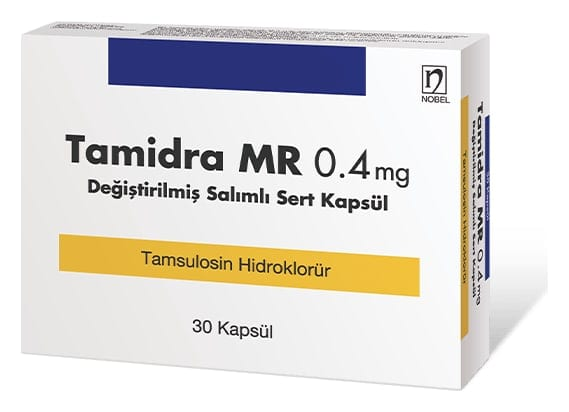

Tamidra MR 0,4 mg Degıstırılmıs Salımlı Sert Kapsül, 20 Adet

Ne için kullanılır
KT · Bölüm 1TAMİDRA MR 0,4 mg, sert kapsüller şeklindedir.
TAMİDRA, 20, 30 ve 50 kapsüllük blister ambalajlarda piyasaya sunulmaktadır.
TAMİDRA’nın etkin maddesi olan tamsulosin hidroklorür, “alfa
-adrenoreseptör antagonistleri” olarak adlandırılan bir ilaç grubunun üyesidir. “Alfa
-adrenoreseptörler” vücudun çeşitli bölümlerinde hücre yüzeyinde bulunan algılayıcı yapıların (reseptör) bir türüdür. Bu yapılar, hücreye gelen mesajları algılayarak, hücrenin o mesaj doğrultusunda faaliyette bulunmasını sağlarlar.
Tamsulosin hidroklorür alfa
-adrenoreseptörleri seçici olarak bloke eder. Bu yapıların faaliyetlerinin bloke edilmesi, prostat ve idrar yollarındaki düz kasları gevşetir. TAMİDRA böylelikle idrarın, idrar yollarından daha rahat geçmesini sağlar, idrara çıkmayı rahatlatır ve idrar sıkışması hissini hafifletir.
TAMİDRA erkeklerde prostat bezinin büyümesi sonucunda ortaya çıkan alt idrar yollarına ait şikâyetlerin tedavisi için kullanılmaktadır. Prostat bezinin iyi huylu büyümesi (selim prostat hiperplazisi), alt idrar yolunu sıkıştırarak, idrar yapma zorluğu (idrar akış kuvvetinin azalması), kesik kesik idrar yapma, idrarın damla damla gelmesi, gerek gece, gerekse gündüzleri sık idrara çıkma ve idrar sıkışması gibi şikayetlere yol açar. TAMİDRA yukarıda sözü edilen etkisi sonucunda, bu belirtilerin rahatlamasını sağlar.